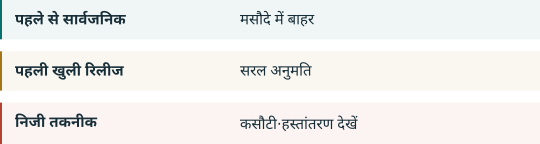

04. चीन के खुले मॉडल आगे कहां जाएंगे¶
खुलापन कई तरह का है¶

डाउनलोड योग्य भार, खुला लाइसेंस और प्रशिक्षण दोहराने की पर्याप्त जानकारी अलग गुण हैं। OSI की परिभाषा उपयोग, अध्ययन, बदलाव और साझा करने की आजादी तथा डेटा जानकारी, कोड और पैरामीटर मांगती है। यह चीनी कानूनी कसौटी से अलग है। OSI
DeepSeek R1 अपने कोड और भार के लिए MIT बताता है और छोटे तैयार किए गए संस्करणों के स्रोत समझाता है। Qwen3 प्रकाशित मॉडल और Apache 2.0 दर्ज करता है। ये मौजूद उदाहरण हैं, सभी मॉडल या अगले संस्करण का वादा नहीं। R1 QWEN
नोट1 पहले से सार्वजनिक तकनीक को बाहर रखता है; नोट2 सीमित तकनीक के नए खुले निर्यात में सुविधा देता है। शोधपत्र का प्रकाशन निजी भार या प्रशिक्षण कोड का प्रकाशन नहीं होता। असली फाइल, सीमित डाउनलोड और बाद के निजी सुधार अलग देखने होंगे। घोषणा हर सीमा वाले मामले का उत्तर नहीं देती। CN-A1 CNQA
चार संभावनाएं, भविष्यवाणी नहीं¶
खुले संस्करण जारी रहना। स्पष्ट सुविधा इस रास्ते का समर्थन करती है। नई संकीर्ण शर्तें या दर्ज देरी इस विचार को कमजोर करेंगी। CN-A1
जारी करने से पहले तैयारी बढ़ना। डेटा, सीमा और फाइल का रिकॉर्ड बढ़ सकता है। यह हमारा अनुमान है, देरी का प्रमाण नहीं। CN-A1
अलग उत्पाद संस्करण। एक संस्करण खुला और अधिक शक्तिशाली मॉडल या खास डेटा निजी रह सकता है। यह व्यापारिक संभावना है, घोषणा की मांग नहीं। CN-A1
अधिक दूरस्थ सेवा। आधिकारिक अंतर इस रास्ते को संभव बनाता है, लेकिन कीमत, निरंतरता, गोपनीयता या अन्य रोक से आजादी की गारंटी नहीं देता। CNQA
हम अंतिम सूची, सार्वजनिक होने का अर्थ, स्वत: अनुमति का व्यवहार, नए चेकपॉइंट और अमेरिकी चिप नियम देखेंगे। चीन के खुले मॉडल खत्म होने की तारीख या संभावना के लिए स्रोत आधार नहीं देते। संस्करण, लाइसेंस, डाउनलोड तारीख और बाद के बदलाव सहेजना हमारा सुझाव है, नया कानूनी कर्तव्य नहीं। CN-A1 EAR742 EAR744